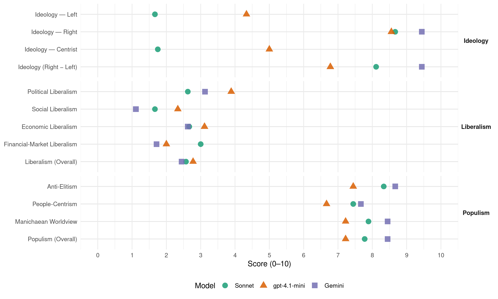

FN (France, 2002)
manifesto_id 31720_200206
Get full text: This site shows derived annotations and short verbatim quotes only. The full manifesto text is © Manifesto Project / WZB — obtain it via manifesto-project.wzb.eu using the manifesto_id above.
Headline scores
| Dimension | Sonnet | gpt-4.1-mini | Gemini |
|---|---|---|---|
| Populism (Overall) | 7.8 | 7.2 | 8.4 |
| Anti-Elitism | 8.3 | 7.4 | 8.7 |
| People-Centrism | 7.4 | 6.7 | 7.7 |
| Manichaean Worldview | 7.9 | 7.2 | 8.4 |
| Ideology (Right − Left) | 8.1 | 6.8 | 9.4 |
| Liberalism (Overall) | 2.6 | 2.8 | 2.4 |
| Political Liberalism | 2.6 | 3.9 | 3.1 |
| Social Liberalism | 1.7 | 2.3 | 1.1 |
| Economic Liberalism | 2.7 | 3.1 | 2.6 |
| Financial-Market Liberalism | 3.0 | 2.0 | 1.7 |
Evidence per dimension
Economic Liberalism
Gemini · score 2.0 · verified · chunk 1
“taxation des importations nuisibles”
Il est nécessaire, ensuite, de rétablir une protection raisonnable de notre économie par la taxation des importations nuisibles à son dynamisme.
Gemini · score 3.0 · verified · chunk 2
“mondialisme broie les peuples et méprise les hommes”
doit se faire dans le pays d’origine, pas en France. Le mondialisme broie les peuples et méprise les hommes : fidèle à sa vocation
Gemini · score 2.0 · verified · chunk 3
“Il s’agit là d’un protectionnisme généreux”
protection sociale, sanitaire et environnementale. Il s’agit là d’un protectionnisme généreux, défendant simultanément l’intérêt
Gemini · score 2.0 · verified · chunk 4
“libre-échangisme mondialiste”
protégés de la concurrence débridée suscitée par le libreéchangisme mondialiste, sous le nom
Gemini · score 3.0 · verified · chunk 5
“revenir à un protectionnisme raisonné”
PRODUIRE FRANÇAIS REVENIR À UN PROTECTIONNISME RAISONNÉ 1. Faire entendre la voix des nations
Gemini · score 5.0 · mixed · chunk 6
“attaché aux libertés économiques et à la libreentreprise”
Le Front National est, depuis toujours, attaché aux libertés économiques et à la libreentreprise. Cependant, il les tient moins
Gemini · score 2.0 · verified · chunk 7
“s’opposant au libre-échangisme et frontières démographiques”
protecteur de la Nation, l’État ne doit pas se dérober à son devoir de défense de l’intégrité des frontières : frontières économiques, en s’opposant au libre-échangisme et frontières démographiques, en inversant
Gemini · score 4.0 · verified · chunk 8
“la liberté de fixation des prix des médicaments”
Dans cette perspective, la liberté de fixation des prix des médicaments sera rétablie afin d’encourager
Gemini · score 3.0 · verified · chunk 9
“abstractions de l’homo oeconomicus ou consumans que défend le libéralisme”
Il ne fait pas non plus siennes les abstractions de l’homo oeconomicus ou consumans que défend le libéralisme.
gpt-4.1-mini · score 2.0 · verified · chunk 1
“Il faut, ensuite, de rétablir une protection raisonnable de notre économie par la taxation des importations nuisibles”
Il faut libérer les énergies créatrices et les métiers pour vaincre le chômage et la pauvreté. Pour que la France retrouve sa prospérité, il faut que les Français conservent ou retrouvent du travail. Les Français doivent, tout d’abord, être prioritaires dans les emplois disponibles en France. De même, les dispositifs sociaux doivent leur être accordés de façon prioritaire. Il est nécessaire, ensuite, de rétablir une protection raisonnable de notre économie par la taxation des importations nuisibles à son dynamisme.
gpt-4.1-mini · score 3.0 · verified · chunk 2
“la préférence nationale est un sentiment naturel”
… Dans les relations avec l’étranger, le principe de la préférence nationale - le Français jouit en France de privilèges auxquels l’étranger ne peut accéder - doit prévaloir. La préférence nationale est un sentiment naturel : elle instaure un devoir de solidarité entre compatriotes, comparable à celui qui unit les membres d’une même famille. …
gpt-4.1-mini · score 5.0 · verified · chunk 3
“la fiscalité – notamment la TVA et l’impôt sur les sociétés – contribue”
Les intérêts économiques et la fiscalité actuels favorisent des modes de production destructeurs de l’emploi, de la santé humaine et de l’environnement. La fiscalité – notamment la TVA et l’impôt sur les sociétés – contribue fortement …
gpt-4.1-mini · score 1.0 · verified · chunk 4
“libre-échangisme mondialiste”
Sa méthode ? Toujours plus de mondialisme et de libre-échangisme ! La création d’emplois passerait (!) par une ouverture toujours plus grande des frontières, par toujours plus de concurrence.
gpt-4.1-mini · score 3.0 · verified · chunk 5
“l’État impose ses vues quant à l’utilisation des ressources nationales”
Il montre qu’en France, l’État impose ses vues quant à l’utilisation des ressources nationales dans une proportion très supérieure à celle des autres pays.
gpt-4.1-mini · score 4.0 · verified · chunk 6
“le Front National est, depuis toujours, attaché aux libertés économiques et à la libreentreprise”
…Le Front National est, depuis toujours, attaché aux libertés économiques et à la libreentreprise. Cependant, il les tient moins pour des fins exclusives de l’économie que pour des moyens propres à libérer les potentialités…
gpt-4.1-mini · score 4.0 · verified · chunk 7
“liberté rendue à la création d’entreprises et à l’organisation du marché du travail”
Un désengagement progressif de l’Etat est absolument nécessaire : réforme fiscale et diminution des charges sociales, d’une part, liberté rendue à la création d’entreprises et à l’organisation du marché du travail, d’autre part.
gpt-4.1-mini · score 4.0 · verified · chunk 8
“la taxation de l’outil de travail”
…le financement du “gros risque” se fera, comme actuellement, par un prélèvement à la source mais dont le taux sera fortement diminué, compensé par une TVA sociale, afin d’alléger la taxation de l’outil de travail…
gpt-4.1-mini · score 2.0 · verified · chunk 9
“La droite “libérale”, crispée sur un individualisme égoïste”
La droite “libérale”, crispée sur un individualisme égoïste aussi négateur que le socialisme, a montré, avec la fin des années de forte croissance économique, les très courtes limites de ses talents de “gestionnaire”.
Sonnet · score 2.0 · verified · chunk 1
“taxation des importations nuisibles à son dynamisme”
Il est nécessaire, ensuite, de rétablir une protection raisonnable de notre économie par la taxation des importations nuisibles à son dynamisme.
Sonnet · score 3.0 · verified · chunk 2
“le mondialisme est, là-bas, la cause première de cet exode”
Les prestations sociales que les ressortissants immigrés savent recevoir automatiquement en arrivant en France, constituent donc autant de pompes aspirantes des populations du tiers-monde. Le mondialisme est, là-bas, la cause première de cet exode alors même qu’il se pose, ici, en modèle d’organisation des peuples.
Sonnet · score 3.0 · verified · chunk 3
“fictions du libre-échangisme généralisé”
Elle inscrira ses relations économiques dans un cadre bilatéral, loin des fictions du libre-échangisme généralisé
Sonnet · score 2.0 · verified · chunk 4
“toujours plus de mondialisme et de libre-échangisme”
Sa méthode ? Toujours plus de mondialisme et de libre-échangisme ! La création d’emplois passerait (!) par une ouverture toujours plus grande des frontières
Sonnet · score 4.0 · mixed · chunk 5
“attaché aux libertés économiques et à la libre-entreprise”
Le Front National est, depuis toujours, attaché aux libertés économiques et à la libre-entreprise. Cependant, il les tient moins pour des fins exclusives
Sonnet · score 5.0 · mixed · chunk 6
“attaché aux libertés économiques et à la libre-entreprise”
Le Front National est, depuis toujours, attaché aux libertés économiques et à la libre-entreprise. Cependant, il les tient moins pour des fins exclusives
Sonnet · score 3.0 · verified · chunk 7
“libre-échangisme qui, généralisant progressivement”
le libre-échangisme qui, généralisant progressivement à tous les secteurs de l’économie une concurrence sauvage et sans frein, est à l’origine de la disparition de pans entiers de notre industrie
Sonnet · score 4.0 · mixed · chunk 8
“liberté de fixation des prix des médicaments”
la liberté de fixation des prix des médicaments sera rétablie afin d’encourager l’investissement dans la recherche de molécules nouvelles.
Sonnet · score 3.0 · verified · chunk 9
“abstractions de l’homo oeconomicus ou consumans”
Il ne fait pas non plus siennes les abstractions de l’homo oeconomicus ou consumans que défend le libéralisme.
Financial-Market Liberalism
Gemini · score 1.0 · verified · chunk 3
“tutelle des institutions financières mondiales”
aggravé leur endettement extérieur et la tutelle des institutions financières mondiales. Elle a été interprêtée
Gemini · score 2.0 · verified · chunk 4
“maîtrise de sa politique économique et financière”
la possession de sa monnaie et donc la maîtrise de sa politique économique et financière; - la maîtrise de sa fiscalité
Gemini · score 2.0 · verified · chunk 5
“La financiarisation de l’économie mondiale”
très supérieurs à ceux observés en Allemagne et aux États-Unis. La financiarisation de l’économie mondiale par les échanges
Gemini · score 2.0 · verified · chunk 6
“taxation des mouvements spéculatifs de capitaux”
doit donc être supprimé au profit d’une taxation des mouvements spéculatifs de capitaux. Le système fiscal
Gemini · score 1.0 · verified · chunk 7
“dérive vers la “financiarisation” de notre économie”
De quelle perversion s’agit-il ? D’une dérive vers la “financiarisation” de notre économie. Maurice Allais, Jean-Paul
Gemini · score 2.0 · verified · chunk 8
“la facturation des services bancaires sera prohibée”
ne rapportent rien à leurs détenteurs. La facturation des services bancaires sera prohibée.
Gemini · score 2.0 · verified · chunk 9
“grands groupes financiers qui les possèdent”
les media, du moins ceux qui les inspirent ou leur donnent le ton (les grands groupes financiers qui les possèdent), passent d’un extrême à l’autre
gpt-4.1-mini · score 2.0 · verified · chunk 6
“le financement de la dette publique à hauteur d’un quart par des “non-résidents”, est une menace”
…Le financement de la dette publique à hauteur d’un quart par des “non-résidents”, est une menace sur notre indépendance nationale…
gpt-4.1-mini · score 2.0 · verified · chunk 7
“les profits financiers excessifs, trop souvent liés à la spéculation”
Premières victimes de cette situation : les Français de souche, particulièrement nos jeunes compatriotes, hommes et femmes, qui subissent de plein fouet l’immigration et son cortège de délinquance et de criminalité, et à qui ne profite pas en priorité le regain actuel de croissance de notre économie. La montée de l’islam, fédérateur de la majeure partie de la population immigrée, l’extension de la consommation des drogues et des pandémies (hépatites, tuberculose, Sida), l’augmentation ininterrompue de l’insécurité, sont autant de phénomènes qui participent à la décomposition, chaque année plus évidente, de la société française.
gpt-4.1-mini · score 2.0 · verified · chunk 8
“la désétatisation”
…La désétatisation de ces fonds ne doit pas aboutir à leur confiscation par les banques et les sociétés d’assurances…
Sonnet · score 3.0 · verified · chunk 1
“concours bancaire parce qu’il est élu”
quand un chef d’entreprise se voit refuser tout concours bancaire parce qu’il est élu du Front National, nous sommes en présence d’un processus totalitaire.
Sonnet · score 3.0 · verified · chunk 3
“souveraineté financière : mise en place de la BCE”
nous transférions à l’Union européenne notre souveraineté financière : mise en place de la BCE, “indépendance” de la Banque de France, engagement dans l’euro
Sonnet · score 3.0 · verified · chunk 4
“monnaie et donc la maîtrise de sa politique économique et financière”
La France retrouvera alors les attributs de la souveraineté : - la possession de sa monnaie et donc la maîtrise de sa politique économique et financière
Sonnet · score 3.0 · verified · chunk 5
“la bulle financière et spéculative, qui a causé les crises”
La bulle financière et spéculative, qui a causé les crises mexicaine, russe et asiatique de ces dernières années, s’oppose ainsi à tout assainissement de l’économie internationale.
Sonnet · score 3.0 · verified · chunk 6
“taxe sur tout mouvement de capitaux”
Une taxe de 1,5% sur tout mouvement de capitaux supérieur à 100 millions de F. en direction d’un pays étranger sera instituée
Sonnet · score 3.0 · verified · chunk 7
“dérive vers la ‘financiarisation’ de notre économie”
le chômage a des causes économiques structurelles, découlant d’une perversion profonde de l’économie de marché. De quelle perversion s’agit-il ? D’une dérive vers la ‘financiarisation’ de notre économie.
Sonnet · score 3.0 · verified · chunk 8
“La facturation des services bancaires sera prohibée”
il est en effet anormal que ces dépôts, que celles-ci font fructifier à leur profit, ne rapportent rien à leurs détenteurs. La facturation des services bancaires sera prohibée.
Political Liberalism
Gemini · score 3.0 · verified · chunk 1
“référendum d’initiative populaire instauré”
Le référendum sera élargi aux questions de société et le référendum d’initiative populaire instauré.
Gemini · score 2.0 · verified · chunk 2
“Le Conseil constitutionnel, sortant complètement de son rôle”
fondée sur l’absence de distinction selon la nationalité. Le Conseil constitutionnel, sortant complètement de son rôle, a validé cette conception.
Gemini · score 3.0 · verified · chunk 3
“gouvernement des juges à la dimension d’un continent”
C’est le gouvernement des juges à la dimension d’un continent, mécanisme de Cour suprême
Gemini · score 2.0 · verified · chunk 4
“gouvernement des juges”
échappe aux États membres. C’est le gouvernement des juges à la dimension d’un
Gemini · score 3.0 · verified · chunk 5
“soumission au pouvoir politique”
aggravent encore un peu plus la maladie évoquée plus haut : la soumission au pouvoir politique et l’absence de moyens.
Gemini · score 7.0 · verified · chunk 6
“le consentement à l’impôt est, aujourd’hui en France, nié”
dans toutes les institutions nationales dans le monde, le consentement à l’impôt est, aujourd’hui en France, nié dans sa réalité.
Gemini · score 2.0 · verified · chunk 7
“le fonctionnement du régime de base d’assurance-vieillesse sera soumis au contrôle du Parlement”
Le fonctionnement du régime de base d’assurance-vieillesse sera soumis au contrôle du Parlement. Afin de garantir
Gemini · score 3.0 · verified · chunk 8
“restaurer la liberté d’expression et de création”
Il faut libérer la pensée, restaurer la liberté d’expression et de création artistique des entraves
Gemini · score 4.0 · mixed · chunk 9
“rétablissement de la liberté d’opinion, d’expression, de manifestation”
le rétablissement de la liberté d’opinion, d’expression, de manifestation et de réunion pour tous les citoyens
gpt-4.1-mini · score 3.0 · verified · chunk 1
“Le référendum sera élargi aux questions de société et le référendum d’initiative populaire instauré”
Le référendum sera élargi aux questions de société et le référendum d’initiative populaire instauré. Le scrutin proportionnel permet à chacun d’être représenté, il sera adopté. Une lutte impitoyable sera menée contre la corruption et les corrompus sévèrement châtiés.
gpt-4.1-mini · score 3.0 · verified · chunk 2
“Le droit de vote ne sera accordé qu’aux citoyens français”
… Le mode normal d’acquisition de la nationalité française, c’est-à-dire la filiation, sera réaffirmé comme base du Code de la nationalité et de la citoyenneté : “Naît français tout enfant né de père ou de mère français”. Le droit de vote ne sera accordé qu’aux citoyens français. 7. Interdire la double nationalité …
gpt-4.1-mini · score 6.0 · verified · chunk 3
“le gouvernement diffusera le plus largement possible les résultats scientifiques”
…Le gouvernement diffusera le plus largement possible les résultats scientifiques ayant trait à l’environnement pour permettre aux Français de se forger un avis objectif …
gpt-4.1-mini · score 2.0 · verified · chunk 4
“la souveraineté nationale appartient au peuple”
Si “la souveraineté nationale appartient au peuple”, ainsi que le proclame encore l’article 3 de la Constitution de 1958, la réalité de ce principe est quotidiennement bafouée.
gpt-4.1-mini · score 2.0 · verified · chunk 5
“l’indépendance du pouvoir judiciaire est un mot vide de sens”
L’indépendance du pouvoir judiciaire est un mot vide de sens à partir du moment où les juges dépendent du gouvernement, ne serait-ce que pour leur emploi.
gpt-4.1-mini · score 5.0 · verified · chunk 6
“le consentement à l’impôt est, aujourd’hui en France, nié dans sa réalité”
…Le consentement à l’impôt est, aujourd’hui en France, nié dans sa réalité. Il faut donc rétablir ce principe dans son intégralité. La réforme fiscale reposera sur le principe de non-confiscation…
gpt-4.1-mini · score 5.0 · verified · chunk 7
“le fonctionnement du régime de base d’assurance-vieillesse sera soumis au contrôle du Parlement”
Le fonctionnement du régime de base d’assurance-vieillesse sera soumis au contrôle du Parlement. Afin de garantir une retraite minimale décente à tous les Français, il convient aussi de modifier les conditions d’application des pensions de reversion.
gpt-4.1-mini · score 6.0 · verified · chunk 8
“respect absolu du secret médical”
…respect absolu du secret médical, autorisation préalable à tout prélèvement d’organes…
gpt-4.1-mini · score 3.0 · verified · chunk 9
“liberté d’opinion, d’expression, de manifestation et de réunion”
- le rétablissement de la liberté d’opinion, d’expression, de manifestation et de réunion pour tous les citoyens, à condition de respecter l’ordre et la morale publics et les intérêts de la France ; - l’équité dans l’élaboration des systèmes électoraux,
Sonnet · score 2.0 · verified · chunk 1
“référendum d’initiative populaire instauré”
Le référendum sera élargi aux questions de société et le référendum d’initiative populaire instauré. Le scrutin proportionnel permet à chacun d’être représenté, il sera adopté.
Sonnet · score 2.0 · verified · chunk 2
“Le Conseil constitutionnel, sortant complètement de son rôle, a validé cette conception”
Le lobby immigrationniste a, en effet, su entretenir une législation attractive, fondée sur l’absence de distinction selon la nationalité. Le Conseil constitutionnel, sortant complètement de son rôle, a validé cette conception.
Sonnet · score 3.0 · verified · chunk 3
“refusera son concours à la mise en place”
La France retirera son concours au prétendu tribunal pénal international de La Haye et refusera son concours à la mise en place de la future Cour pénale internationale
Sonnet · score 2.0 · verified · chunk 4
“un ordre juridique totalitaire”
L’Europe de Maastricht et d’Amsterdam, c’est la mise en place d’un ordre juridique totalitaire, souvent délirant, toujours hyper-contraignant
Sonnet · score 3.0 · verified · chunk 5
“L’indépendance du pouvoir judiciaire est un mot vide de sens”
L’indépendance du pouvoir judiciaire est un mot vide de sens à partir du moment où les juges dépendent du gouvernement, ne serait-ce que pour leur emploi
Sonnet · score 4.0 · verified · chunk 6
“le référendum sera utilisé”
En matière d’impôt d’État, le référendum sera utilisé, concurremment à la loi parlementaire, pour prendre de grandes décisions fiscales
Sonnet · score 3.0 · verified · chunk 7
“monopole de représentation accordé aux centrales”
la suppression du monopole de représentation accordé aux centrales syndicales interprofessionnelles de l’Établissement
Sonnet · score 2.0 · verified · chunk 8
“boycott, proprement totalitaire”
Ce boycott, proprement totalitaire, ne tient même pas compte du fait que les électeurs du Front National acquittent aussi la redevance audiovisuelle.
Sonnet · score 3.0 · mixed · chunk 9
“rétablissement d’une démocratie concrète”
C’est une condition essentielle pour le rétablissement d’une démocratie concrète, car celle-ci exige que tous les Français puissent être représentés
Liberalism (Overall)
Gemini · score 2.0 · verified · chunk 1
“taxation des importations nuisibles”
Il est nécessaire, ensuite, de rétablir une protection raisonnable de notre économie par la taxation des importations nuisibles à son dynamisme.
Gemini · score 2.0 · verified · chunk 2
“Le refus de la société multiculturelle”
LES PRINCIPES : FRANCE ENRACINÉE CONTRE SOCIÉTÉ MULTICULTURELLE L’IDENTITÉ FRANÇAISE Le refus de la société multiculturelle, au nom de l’identité de la France
Gemini · score 2.0 · verified · chunk 3
“Il s’agit là d’un protectionnisme généreux”
protection sociale, sanitaire et environnementale. Il s’agit là d’un protectionnisme généreux, défendant simultanément l’intérêt
Gemini · score 2.0 · verified · chunk 4
“sortir de cette Europe-là”
vraiment, il n’est que temps de sortir de cette Europe-là! LES PRINCIPES
Gemini · score 2.0 · verified · chunk 5
“revenir à un protectionnisme raisonné”
PRODUIRE FRANÇAIS REVENIR À UN PROTECTIONNISME RAISONNÉ 1. Faire entendre la voix des nations
Gemini · score 4.0 · verified · chunk 6
“attaché aux libertés économiques et à la libreentreprise”
Le Front National est, depuis toujours, attaché aux libertés économiques et à la libreentreprise. Cependant, il les tient moins
Gemini · score 2.0 · verified · chunk 7
“s’opposant au libre-échangisme et frontières démographiques”
protecteur de la Nation, l’État ne doit pas se dérober à son devoir de défense de l’intégrité des frontières : frontières économiques, en s’opposant au libre-échangisme et frontières démographiques, en inversant
Gemini · score 3.0 · verified · chunk 8
“restaurer la liberté d’expression et de création”
Il faut libérer la pensée, restaurer la liberté d’expression et de création artistique des entraves
Gemini · score 3.0 · verified · chunk 9
“droite “libérale”, crispée sur un individualisme égoïste”
La droite “libérale”, crispée sur un individualisme égoïste aussi négateur que le socialisme, a montré
gpt-4.1-mini · score 2.0 · verified · chunk 1
“Le référendum sera élargi aux questions de société et le référendum d’initiative populaire instauré”
Le référendum sera élargi aux questions de société et le référendum d’initiative populaire instauré. Le scrutin proportionnel permet à chacun d’être représenté, il sera adopté. Une lutte impitoyable sera menée contre la corruption et les corrompus sévèrement châtiés.
gpt-4.1-mini · score 3.0 · verified · chunk 2
“Le droit de vote ne sera accordé qu’aux citoyens français”
… Le mode normal d’acquisition de la nationalité française, c’est-à-dire la filiation, sera réaffirmé comme base du Code de la nationalité et de la citoyenneté : “Naît français tout enfant né de père ou de mère français”. Le droit de vote ne sera accordé qu’aux citoyens français. 7. Interdire la double nationalité …
gpt-4.1-mini · score 5.0 · verified · chunk 3
“le gouvernement diffusera le plus largement possible les résultats scientifiques”
…Le gouvernement diffusera le plus largement possible les résultats scientifiques ayant trait à l’environnement pour permettre aux Français de se forger un avis objectif …
gpt-4.1-mini · score 1.0 · verified · chunk 4
“libre-échangisme mondialiste”
Sa méthode ? Toujours plus de mondialisme et de libre-échangisme ! La création d’emplois passerait (!) par une ouverture toujours plus grande des frontières, par toujours plus de concurrence.
gpt-4.1-mini · score 2.0 · verified · chunk 5
“l’indépendance du pouvoir judiciaire est un mot vide de sens”
L’indépendance du pouvoir judiciaire est un mot vide de sens à partir du moment où les juges dépendent du gouvernement, ne serait-ce que pour leur emploi.
gpt-4.1-mini · score 3.0 · verified · chunk 6
“le consentement à l’impôt est, aujourd’hui en France, nié dans sa réalité”
…Le consentement à l’impôt est, aujourd’hui en France, nié dans sa réalité. Il faut donc rétablir ce principe dans son intégralité. La réforme fiscale reposera sur le principe de non-confiscation…
gpt-4.1-mini · score 3.0 · verified · chunk 7
“Un désengagement progressif de l’Etat est absolument nécessaire”
Un désengagement progressif de l’Etat est absolument nécessaire : réforme fiscale et diminution des charges sociales, d’une part, liberté rendue à la création d’entreprises et à l’organisation du marché du travail, d’autre part.
gpt-4.1-mini · score 4.0 · verified · chunk 8
“respect absolu du secret médical”
…respect absolu du secret médical, autorisation préalable à tout prélèvement d’organes…
gpt-4.1-mini · score 2.0 · verified · chunk 9
“liberté d’opinion, d’expression, de manifestation et de réunion”
- le rétablissement de la liberté d’opinion, d’expression, de manifestation et de réunion pour tous les citoyens, à condition de respecter l’ordre et la morale publics et les intérêts de la France ; - l’équité dans l’élaboration des systèmes électoraux,
Sonnet · score 2.0 · verified · chunk 1
“supprimant l’impôt sur le revenu”
Il faut, enfin, diminuer les impôts et les charges en les ramenant immédiatement à la moyenne des pays de l’OCDE (38% du Produit national) et progressivement en deçà, notamment en supprimant l’impôt sur le revenu.
Sonnet · score 2.0 · verified · chunk 2
“Ces capitulations, consenties sous couvert de libéralisme”
Ces capitulations, consenties sous couvert de libéralisme, méconnaissent la réalité des faits, qui veut que de telles pratiques, revendiquées au nom de la tolérance, soient ensuite, par des pressions diverses de leurs promoteurs, imposées à tous les musulmans du voisinage
Sonnet · score 3.0 · verified · chunk 3
“économie ultra-libérale mondialisée sous influence”
le résultat est une économie ultra-libérale mondialisée sous influence des États-Unis, qui fonctionne au profit de puissances financières anonymes
Sonnet · score 2.0 · verified · chunk 4
“notre marché national…soient protégés de la concurrence débridée”
à condition que notre marché national et que le marché européen dans son ensemble, soient protégés de la concurrence débridée suscitée par le libre-échangisme mondialiste
Sonnet · score 3.0 · verified · chunk 5
“protectionnisme raisonné”
il est donc impératif de réguler les échanges en un “protectionnisme raisonné”. La France prendra donc la tête des nations désireuses de faire prévaloir sur le plan international d’autres mécanismes
Sonnet · score 4.0 · mixed · chunk 6
“protectionnisme raisonné”
il est donc impératif de réguler les échanges en un “protectionnisme raisonné”. La France prendra donc la tête des nations
Sonnet · score 3.0 · verified · chunk 7
“protectionnisme raisonné que nous entendons”
La lutte contre la contre-façon internationale sera menée dans le cadre du protectionnisme raisonné que nous entendons mettre en place
Sonnet · score 3.0 · verified · chunk 8
“préférence nationale doit être appliquée”
la règle de la préférence nationale doit être appliquée à l’hôpital, comme partout ailleurs en France.
Sonnet · score 3.0 · mixed · chunk 9
“libertés publiques proclamées dans les grands textes”
Le Front National rappelle donc son attachement à l’ensemble des libertés publiques proclamées dans les grands textes institutionnels et en réclame l’application sans exclusive.
Anti-Elitism
Gemini · score 9.0 · verified · chunk 1
“prétentions totalitaires de l’Établissement politicomédiatique”
Il faut libérer le Peuple français des prétentions totalitaires de l’Établissement politicomédiatique. Dans Français, il y a franc
Gemini · score 9.0 · verified · chunk 2
“dirigeants politiques et médiatiques montrant ouvertement leur hostilité aux valeurs nationales”
ils voient des dirigeants politiques et médiatiques montrant ouvertement leur hostilité aux valeurs nationales et leur adhésion au mondialisme.
Gemini · score 8.0 · verified · chunk 3
“trahison de beaucoup de nos dirigeants”
affaiblissement de nos valeurs et la trahison de beaucoup de nos dirigeants passés et présents qui sont
Gemini · score 9.0 · verified · chunk 4
“oligarchie cosmopolite, totalitaire, corrompue”
s’est installée une oligarchie cosmopolite, totalitaire, corrompue. UNE OLIGARCHIE
Gemini · score 8.0 · verified · chunk 5
“chiffres trafiqués par nos gouvernants”
une bonne fois pour toutes, que ce sont là des chiffres trafiqués par nos gouvernants. Tout d’abord, parce qu’il ne s’agit
Gemini · score 8.0 · verified · chunk 6
“faux débat mis en scène par l’Établissement”
C’est un faux débat mis en scène par l’Établissement pour abuser les Français.
Gemini · score 9.0 · verified · chunk 7
“conséquence de 25 ans de politique de l’établissement”
Le chômage, conséquence de 25 ans de politique de l’établissement Le chômage est l’échec
Gemini · score 9.0 · verified · chunk 8
“oligarchie agissante manipule les gouvernements”
Dynasties économico-financières et minorités agissantes manipule les gouvernements de la France.
Gemini · score 9.0 · verified · chunk 9
“diabolisation d’une représentation fictive du Front National, par l’ensemble de la classe politico-médiatique”
Cette persécution, construite à partir de la diabolisation d’une représentation fictive du Front National, par l’ensemble de la classe politico-médiatique, se traduit par des violations permanentes des droits
gpt-4.1-mini · score 9.0 · verified · chunk 1
“les prébendiers de toute origine qui prétendent les réduire en servitude”
Le référendum sera élargi aux questions de société et le référendum d’initiative populaire instauré. Le scrutin proportionnel permet à chacun d’être représenté, il sera adopté. Une lutte impitoyable sera menée contre la corruption et les corrompus sévèrement châtiés. Les élus coupables seront inéligibles. Le cumul des mandats sera très strictement limité. Les droits du Parlement seront étendus. Enfin, le pays sera embelli et notre patrimoine, naturel et culturel, protégé et mis en valeur. Pour que triomphe la vérité qui rend libre, il n’y a que la voie nationale. Rejoignez-nous, pour gagner la bataille de la libération de la France! Demain, ensemble, la nef France, toutes voiles neuves dehors, nous fera entrer, Français, dans un avenir de renaissance et de grandeur.
gpt-4.1-mini · score 8.0 · verified · chunk 2
“dirigeants politiques et médiatiques montrant ouvertement leur hostilité aux valeurs nationales”
… quartiers ethniques et les cités-ghettos, repliés sur eux-mêmes et fonctionnant trop souvent grâce à l’argent de la drogue, peuvent d’autant moins “faire France” qu’ils voient des dirigeants politiques et médiatiques montrant ouvertement leur hostilité aux valeurs nationales et leur adhésion au mondialisme. Comment pourraient-ils “respecter la loi française” …
gpt-4.1-mini · score 8.0 · verified · chunk 3
“les trusts et administrations qui vivent du nucléaire”
…limiter la matière première nécessaire et de supprimer quasiment tout déchet : voilà qui n’est pas bon pour les trusts et administrations qui vivent du nucléaire ! DES MENACES GRAVES POUR NOTRE SANTÉ …
gpt-4.1-mini · score 2.0 · verified · chunk 4
“une oligarchie cosmopolite, totalitaire, corrompue”
Les institutions françaises sont schizophrènes : il y a une apparence, celle de la Constitution et des lois, et il y a une réalité, celle des factions qui se partagent les prébendes et entendent les garder. Sous la coquille “républicaine”, “démocratique”, “citoyenne”, s’est installée une oligarchie cosmopolite, totalitaire, corrompue.
gpt-4.1-mini · score 8.0 · verified · chunk 5
“la caste technocratique”
Le secteur public a régressé entre 1986 et 1999, mais son ampleur reste considérable. Les hommes qui en assurent la direction et le contrôle sont issus de la même caste technocratique : c’est “l’auto-contrôle à la française”.
gpt-4.1-mini · score 7.0 · verified · chunk 6
“la technocratie statolâtre et libre-échangiste”
…carrefour de toutes les subversions, où l’on s’en prend à nos institutions et à nos entreprises : la France y perd sa souveraineté et sa prospérité. La technocratie statolâtre et libre-échangiste, carrefour de toutes les subversions…
gpt-4.1-mini · score 8.0 · verified · chunk 7
“intérêts qui le contrôlent”
Sous la pression du gouvernement des États-Unis et des intérêts qui le contrôlent, les règles et le fonctionnement de l’OMC sont sans cesse modifiés pour aboutir à la libéralisation totale des échanges agricoles mondiaux.
gpt-4.1-mini · score 8.0 · verified · chunk 8
“les politiciens de l’Établissement”
…la destruction de la France menée par les politiciens de l’Établissement, après l’extinction biologique…
gpt-4.1-mini · score 9.0 · verified · chunk 9
“l’État est dominé par une oligarchie”
Il n’y a pas de libertés dans un pays où l’État est dominé par une oligarchie. Le Front National rappelle donc son attachement à l’ensemble des libertés publiques proclamées dans les grands textes institutionnels et en réclame l’application sans exclusive.
Sonnet · score 9.0 · verified · chunk 1
“prétentions totalitaires de l’Établissement politicomédiatique”
Il faut libérer le Peuple français des prétentions totalitaires de l’Établissement politicomédiatique. Dans Français, il y a franc
Sonnet · score 8.0 · verified · chunk 2
“la responsabilité de l’immigration et de ses conséquences relève –exclusivement– des hommes politiques qui nous gouvernent depuis 40 ans”
Comme l’a toujours dit le Front National, la responsabilité de l’immigration et de ses conséquences relève –exclusivement– des hommes politiques qui nous gouvernent depuis 40 ans. Une menace mortelle pour la souveraineté française
Sonnet · score 8.0 · verified · chunk 3
“lobbies et des multinationales, qui détruisent”
organiser un gouvernement mondial de fait, aux mains des lobbies et des multinationales, qui détruisent l’environnement des pays du tiers-monde
Sonnet · score 9.0 · verified · chunk 4
“une oligarchie cosmopolite, totalitaire, corrompue”
Sous la coquille “républicaine”, “démocratique”, “citoyenne”, s’est installée une oligarchie cosmopolite, totalitaire, corrompue.
Sonnet · score 7.0 · verified · chunk 5
“les pouvoirs successifs en place faisaient de l’indépendance du juge”
c’est les “affaires” qui ont permis de voir le peu de cas que les pouvoirs successifs en place faisaient de l’indépendance du juge. De l’assassinat de Jean de Broglie à ELF
Sonnet · score 8.0 · verified · chunk 6
“l’Établissement pour abuser les Français”
C’est un faux débat mis en scène par l’Établissement pour abuser les Français. C’est l’intérêt national, et non l’idéologie
Sonnet · score 8.0 · verified · chunk 7
“intérêts ploutocratiques anonymes”
Telle est l’agriculture vue de Bruxelles : une machine devenue folle, au seul service d’intérêts ploutocratiques anonymes.
Sonnet · score 9.0 · verified · chunk 8
“politiciens de l’Établissement dépendent de lobbies”
Les politiciens de l’Établissement dépendent de lobbies, d’états organisés dans l’État, qui orientent l’action des pouvoirs publics.
Sonnet · score 9.0 · verified · chunk 9
“l’ensemble de la classe politico-médiatique”
Cette persécution, construite à partir de la diabolisation d’une représentation fictive du Front National, par l’ensemble de la classe politico-médiatique, se traduit par des violations permanentes
Ideology — Centrist
gpt-4.1-mini · score 5.0 · verified · chunk 1
“l’offre politique, comme disent les “politologues”, est des plus réduites”
Si beaucoup de nos compatriotes se détournent du débat public, qui conditionne pourtant leur avenir et celui de leurs enfants, c’est parce que l’offre politique, comme disent les “politologues”, est des plus réduites : du Figaro à Libération et de Krivine à Madelin, commentaires et discours sont les mêmes, à quelques nuances ou silences près.
gpt-4.1-mini · score 3.0 · verified · chunk 2
“la France est une nation “venue du fond des âges””
OTAN pendant la “guerre” du Kosovo). La France est une nation “venue du fond des âges” et sa population est, pour l’essentiel, fixée depuis plus de deux millénaires. Elle est principalement issue de la fusion de trois composantes européennes : celte, latine, germanique. …
gpt-4.1-mini · score 6.0 · verified · chunk 3
“les populations pourront être consultées par référendum”
…Les populations pourront être consultées par référendum sur les questions d’environnement et les projets d’urbanisme ou d’infrastructure. De surcroît, elles auront la possibilité …
gpt-4.1-mini · score 3.0 · verified · chunk 4
“la souveraineté nationale appartient au peuple”
Si “la souveraineté nationale appartient au peuple”, ainsi que le proclame encore l’article 3 de la Constitution de 1958, la réalité de ce principe est quotidiennement bafouée.
gpt-4.1-mini · score 6.0 · verified · chunk 5
“le gouvernement des juges détruit alors la Justice”
Le “gouvernement des juges” détruit alors la Justice. Cette instrumentalisation totalitaire de la justice pèse d’autant plus lourdement sur elle.
gpt-4.1-mini · score 5.0 · verified · chunk 6
“l’intérêt national, et non l’idéologie, qui nous fait choisir l’allègement de la pression fiscale”
…C’est l’intérêt national, et non l’idéologie, qui nous fait choisir l’allègement de la pression fiscale sur tous et la liberté de choix pour l’indispensable protection sociale de chacun…
gpt-4.1-mini · score 6.0 · verified · chunk 7
“l’État a pour vocation la pérennité de cette dernière”
L’État a pour vocation la pérennité de cette dernière. Il n’a, en revanche, qu’un rôle de garant et d’arbitre dans la vie familiale comme dans la vie économique, car c’est d’abord à chaque citoyen d’assurer son bienêtre par les fruits de son travail.
gpt-4.1-mini · score 6.0 · verified · chunk 9
“Le Front National porte des valeurs qui transcendent les époques”
Le Front National porte des valeurs qui transcendent les époques et les modes. La gauche, négative par essence, dont le maître mot sera toujours la destruction, est par définition incapable de fonder un ordre social durable.
Sonnet · score 1.0 · verified · chunk 1
“la voie nationale est désormais la seule possible”
L’enjeu des années qui viennent est clair : ou la continuité des politiques socialolibérales, ou le choix de l’alternative, c’est-à-dire la voie nationale. La voie nationale est désormais la seule possible.
Sonnet · score 2.0 · verified · chunk 3
“populations pourront être consultées par référendum”
Les populations pourront être consultées par référendum sur les questions d’environnement
Sonnet · score 2.0 · verified · chunk 4
“le peuple doit être consulté”
Sur toutes les grandes questions dites de société qui, en réalité, engagent l’avenir de notre Nation, le peuple doit être consulté par les pouvoirs publics.
Sonnet · score 2.0 · verified · chunk 5
“les Français ne peuvent espérer que dans le Front National”
la France et les Français ne peuvent espérer que dans le Front National pour rompre avec la barbarie et renouer avec la civilisation.
Sonnet · score 2.0 · verified · chunk 6
“l’intérêt national, et non l’idéologie”
C’est l’intérêt national, et non l’idéologie, qui nous fait choisir l’allègement de la pression fiscale
Sonnet · score 2.0 · verified · chunk 7
“les paysans et le monde rural”
Les paysans et le monde rural sont porteurs de valeurs traditionnelles indispensables à la stabilité de notre pays.
Sonnet · score 2.0 · verified · chunk 8
“peuple français…porte-parole”
d’être le porte-parole du peuple français sans concessions ni gesticulations, fait obstacle sur la route de sa disparition programmée.
Sonnet · score 1.0 · verified · chunk 9
“droite nationale, populaire et sociale”
telle est la philosophie, la vraie, la seule qui fonde le combat de la droite nationale, populaire et sociale que nous incarnons.
Ideology — Left
gpt-4.1-mini · score 3.0 · verified · chunk 1
“la continuité des politiques socialolibérales”
L’enjeu des années qui viennent est clair : ou la continuité des politiques socialolibérales, ou le choix de l’alternative, c’est-à-dire la voie nationale.
gpt-4.1-mini · score 7.0 · verified · chunk 2
“la gauche syndicale”
… laissés seuls face à la violence, pénalisés quand ils veulent bien faire, ostracisés quand ils tentent de s’affranchir de la dictature des organisations de la gauche syndicale. Depuis 1969, l’enseignement français a produit en moyenne 4 900 bacheliers supplémentaires par an. …
gpt-4.1-mini · score 7.0 · verified · chunk 3
“la recherche du profit pour le profit”
Les techniques de commercialisation, la recherche du profit pour le profit, la perte de contrôle national au profit d’instances européennes …
gpt-4.1-mini · score 2.0 · verified · chunk 4
“le libre-échangisme mondialiste”
En économie, nous ne sommes pas hostiles à des coopérations souples avec les autres États d’Europe, mais à condition que notre marché national et que le marché européen dans son ensemble, soient protégés de la concurrence débridée suscitée par le libreéchangisme mondialiste, sous le nom de “globalisation”.
gpt-4.1-mini · score 3.0 · verified · chunk 5
“philosophie d’inspiration marxiste”
Il faut bannir de l’appareil judiciaire et de notre politique pénale la philosophie d’inspiration marxiste selon laquelle le coupable n’est pas responsable puisqu’il ne serait qu’une victime de la société.
gpt-4.1-mini · score 4.0 · verified · chunk 6
“la fiscalité française ne fait, en réalité, qu’aggraver les inégalités”
…Bien qu’elle ait pour objectif avoué d’assurer la justice sociale, la fiscalité française ne fait, en réalité, qu’aggraver les inégalités. L’hyper-taxation des revenus personnels du travail permet une fiscalité à deux vitesses…
gpt-4.1-mini · score 7.0 · verified · chunk 7
“la politique sociale a donc pour but de cimenter en une authentique fraternité”
La politique sociale a donc pour but de cimenter en une authentique fraternité, les membres de la communauté nationale, regroupés dans les sociétés humaines primordiales que sont les familles et les entreprises.
gpt-4.1-mini · score 3.0 · verified · chunk 8
“la gauche, négative par essence, dont le maître mot sera toujours la destruction”
…La gauche, négative par essence, dont le maître mot sera toujours la destruction, est par définition incapable de fonder un ordre social durable…
gpt-4.1-mini · score 3.0 · verified · chunk 9
“La gauche, négative par essence, dont le maître mot sera toujours la destruction”
La gauche, négative par essence, dont le maître mot sera toujours la destruction, est par définition incapable de fonder un ordre social durable. La droite “libérale”, crispée sur un individualisme égoïste aussi négateur que le socialisme,
Sonnet · score 1.0 · verified · chunk 1
“utopies socialiste ou libre-échangiste”
Elle ne tire pas ses “solutions” des utopies socialiste ou libre-échangiste; elle ne croit ni aux rêveries mondialistes
Sonnet · score 1.0 · verified · chunk 2
“la division internationale du travail, le modèle de développement prôné par les institutions internationales”
La division internationale du travail, le modèle de développement prôné par les institutions internationales (FMI, Banque mondiale, CNUCED), la destruction des agricultures vivrières africaines au profit d’un modèle urbain et administratif déracinant, accélèrent les migrations internationales.
Sonnet · score 2.0 · verified · chunk 3
“trusts et administrations qui vivent du nucléaire”
voilà qui n’est pas bon pour les trusts et administrations qui vivent du nucléaire
Sonnet · score 2.0 · verified · chunk 4
“la fin des protections sociales”
“L’EUROPE”, C’EST LA FIN DES PROTECTIONS SOCIALES — L’Europe de Maastricht et d’Amsterdam, c’est le dumping social entre les quinze pays
Sonnet · score 1.0 · verified · chunk 5
“philosophie d’inspiration marxiste selon laquelle le coupable n’est pas responsable”
Il faut bannir de l’appareil judiciaire et de notre politique pénale la philosophie d’inspiration marxiste selon laquelle le coupable n’est pas responsable puisqu’il ne serait qu’une victime de la société.
Sonnet · score 2.0 · verified · chunk 6
“anti-corporatif”
no direct left-populist anti-corporate framing; text attacks financial elites but from nationalist angle
Sonnet · score 3.0 · verified · chunk 7
“LA JUSTICE SOCIALE CONTRE LE LIBÉRALISME”
LES PRINCIPES : LA JUSTICE SOCIALE CONTRE LE LIBÉRALISME ET L’ÉTATISME
Sonnet · score 2.0 · verified · chunk 8
“politique de relèvement des bas salaires”
il faut évidemment commencer par augmenter leurs revenus, ce qui nécessite une politique de relèvement des bas salaires et l’instauration de la préférence nationale.
Sonnet · score 1.0 · verified · chunk 9
“le socialisme, faire du passé table rase”
Notre mouvement n’idolâtre pas l’État et n’entend pas, comme le socialisme, faire du passé table rase, parce que ce sont les humbles qui perdent le plus
Ideology (Right − Left)
Gemini · score 10.0 · verified · chunk 1
“l’immigration : des menaces mortelles pour la France”
L’IMMIGRATION : DES MENACES MORTELLES POUR LA FRANCE ET LES FRANÇAIS Une menace mortelle pour l’identité française
Gemini · score 10.0 · verified · chunk 2
“Le refus de la société multiculturelle, au nom de l’identité de la France”
LES PRINCIPES : FRANCE ENRACINÉE CONTRE SOCIÉTÉ MULTICULTURELLE L’IDENTITÉ FRANÇAISE Le refus de la société multiculturelle, au nom de l’identité de la France, est le combat fondamental
Gemini · score 9.0 · verified · chunk 3
“défense de notre identité et celle de notre environnement”
Il y a cohérence complète entre la défense de notre identité et celle de notre environnement : nous sommes attachés à
Gemini · score 9.0 · verified · chunk 4
“préférence nationale dans la Constitution”
RESTAURER L’ÉTAT REFAIRE DE L’ÉTAT L’ARBITRE DE LA SOUVERAINETÉ ET DE LA JUSTICE 1. Inscrire la préférence nationale dans la Constitution La Constitution doit
Gemini · score 9.0 · verified · chunk 5
“majoritairement le fait de l’immigration”
pays vise d’abord les personnes et elle est majoritairement le fait de l’immigration. En dix ans, les coups et blessures
Gemini · score 9.0 · verified · chunk 6
“l’arrêt de toute immigration et l’allègement du fardeau”
une vraie décentralisation, l’arrêt de toute immigration et l’allègement du fardeau qu’elle constitue pour le Pays.
Gemini · score 10.0 · verified · chunk 7
“l’immigration massive et non contrôlée qui confisque aux Français”
décisions politiques délibérées : - l’immigration massive et non contrôlée qui confisque aux Français plus d’un million d’emplois
Gemini · score 10.0 · verified · chunk 8
“l’instauration de la préférence nationale”
une politique de relèvement des bas salaires et l’instauration de la préférence nationale.
Gemini · score 9.0 · verified · chunk 9
“combat de la droite nationale, populaire et sociale”
telle est la philosophie, la vraie, la seule qui fonde le combat de la droite nationale, populaire et sociale que nous incarnons.
gpt-4.1-mini · score 7.0 · verified · chunk 1
“Il faut libérer la France du carcan européen”
Il faut libérer la France du carcan européen. La Nation est, pour tous les Français, le cadre naturel de leurs libertés et de leur souveraineté. Toutes les atteintes portées à ces dernières seront remises en cause : Convention de Schengen, traités de Maastricht et d’Amsterdam, “Nouvel Ordre Mondial”. Si elle n’obtient pas la protection de ses intérêts, la France sortira de cette Europe-là.
gpt-4.1-mini · score 8.0 · verified · chunk 2
“Non à l’islamisation de la France !”
… Le Front National s’oppose à cette menace pour la souveraineté et la civilisation françaises. Convaincu que la seule solution de fond est l’inversion du courant de l’immigration, il s’opposera dans l’attente à ces formes de prosélytisme agressif et ne permettra pas que des moyens quelconques y soient consacrés. Non à l’islamisation de la France ! “Deuxième” religion de France selon l’expression de Jacques Chirac …
gpt-4.1-mini · score 7.0 · verified · chunk 3
“défense de notre identité et celle de notre environnement”
Il y a cohérence complète entre la défense de notre identité et celle de notre environnement : nous sommes attachés à notre pays, donc défenseurs du patrimoine naturel …
gpt-4.1-mini · score 4.0 · verified · chunk 4
“préférence nationale”
Inscrire la préférence nationale dans la Constitution. Il est en effet nécessaire de réaffirmer la légitimité constitutionnelle de la priorité des citoyens français en France sur les ressortissants étrangers, en matière de droits civiques, civils et sociaux.
gpt-4.1-mini · score 7.0 · verified · chunk 5
“la part de l’immigration dans la criminalité”
En dépit du trucage des chiffres, deux observations de fond ressortent : la criminalité dans notre pays vise d’abord les personnes et elle est majoritairement le fait de l’immigration.
gpt-4.1-mini · score 6.0 · verified · chunk 6
“la technocratie statolâtre et libre-échangiste”
…carrefour de toutes les subversions, où l’on s’en prend à nos institutions et à nos entreprises : la France y perd sa souveraineté et sa prospérité. La technocratie statolâtre et libre-échangiste…
gpt-4.1-mini · score 8.0 · verified · chunk 7
“préférence nationale à l’emploi”
1. Instaurer la préférence nationale à l’emploi En raison de sa fonction sociale et nationale, l’emploi disponible en France se doit d’être réservé, par priorité, aux citoyens français.
gpt-4.1-mini · score 7.0 · verified · chunk 8
“la préférence nationale”
…la préférence nationale (voir chapitre Institutions) postule évidemment que l’aide sociale publique soit réservée aux seuls Français…
gpt-4.1-mini · score 7.0 · verified · chunk 9
“Il met l’intérêt du peuple français au premier rang”
Il met l’intérêt du peuple français au premier rang des devoirs du politique : c’est le sens profond du principe de préférence nationale. Ces thèmes expriment une conception de l’homme qui rejette le matérialisme individuel ou collectif,
Sonnet · score 9.0 · verified · chunk 1
“immigration galopante, la dénatalité et la ruine des familles”
la perte de l’indépendance et de la souveraineté, le chômage et la baisse des salaires et des revenus, l’excès des charges et des impôts, l’immigration galopante, la dénatalité et la ruine des familles, la disparition de la paix civile.
Sonnet · score 8.0 · verified · chunk 2
“Le refus de la société multiculturelle, au nom de l’identité de la France, est le combat fondamental du Front National”
LES PRINCIPES : FRANCE ENRACINÉE CONTRE SOCIÉTÉ MULTICULTURELLE L’IDENTITÉ FRANÇAISE Le refus de la société multiculturelle, au nom de l’identité de la France, est le combat fondamental du Front National.
Sonnet · score 8.0 · verified · chunk 3
“mondialisme et les multinationales”
La richesse constituée par cette diversité de produits, de paysages, d’espèces et de peuples, est menacée par le mondialisme et les multinationales
Sonnet · score 8.0 · verified · chunk 4
“préférence nationale dans la Constitution”
Inscrire la préférence nationale dans la Constitution — Il est en effet nécessaire de réaffirmer la légitimité constitutionnelle de la priorité des citoyens français
Sonnet · score 8.0 · verified · chunk 5
“Organiser l’inversion des flux migratoires”
3. Organiser l’inversion des flux migratoires La présence d’une population immigrée massive sur notre sol explique, on l’a vu, pour une bonne part, la forte délinquance que nous connaissons en France.
Sonnet · score 8.0 · verified · chunk 6
“l’immigration de peuplement”
un chômage de masse structurel, qui s’ajoute au chômage importé, causé par l’immigration de peuplement
Sonnet · score 7.0 · verified · chunk 7
“préférence nationale à l’emploi”
Instaurer la préférence nationale à l’emploi En raison de sa fonction sociale et nationale, l’emploi disponible en France se doit d’être réservé, par priorité, aux citoyens français.
Sonnet · score 8.0 · verified · chunk 8
“préférence nationale…seuls Français”
La préférence nationale postule évidemment que l’aide sociale publique soit réservée aux seuls Français.
Sonnet · score 9.0 · verified · chunk 9
“identité du peuple français, sa culture, sa langue”
Nous jurons de défendre les libertés, l’indépendance, l’identité du peuple français, sa culture, sa langue et sa civilisation humaniste et chrétienne
Ideology — Right
Gemini · score 10.0 · verified · chunk 1
“l’immigration : des menaces mortelles pour la France”
L’IMMIGRATION : DES MENACES MORTELLES POUR LA FRANCE ET LES FRANÇAIS Une menace mortelle pour l’identité française
Gemini · score 10.0 · verified · chunk 2
“Le refus de la société multiculturelle, au nom de l’identité de la France”
LES PRINCIPES : FRANCE ENRACINÉE CONTRE SOCIÉTÉ MULTICULTURELLE L’IDENTITÉ FRANÇAISE Le refus de la société multiculturelle, au nom de l’identité de la France, est le combat fondamental
Gemini · score 9.0 · verified · chunk 3
“défense de notre identité et celle de notre environnement”
Il y a cohérence complète entre la défense de notre identité et celle de notre environnement : nous sommes attachés à
Gemini · score 9.0 · verified · chunk 4
“maîtrise de sa politique d’immigration”
de sa politique économique et financière; - la maîtrise de sa fiscalité; - la libre disposition de son armée; - la maîtrise de sa politique d’immigration; - le contrôle de ses frontières
Gemini · score 9.0 · verified · chunk 5
“majoritairement le fait de l’immigration”
pays vise d’abord les personnes et elle est majoritairement le fait de l’immigration. En dix ans, les coups et blessures
Gemini · score 9.0 · verified · chunk 6
“l’arrêt de toute immigration et l’allègement du fardeau”
une vraie décentralisation, l’arrêt de toute immigration et l’allègement du fardeau qu’elle constitue pour le Pays.
Gemini · score 10.0 · verified · chunk 7
“l’immigration massive et non contrôlée qui confisque aux Français”
décisions politiques délibérées : - l’immigration massive et non contrôlée qui confisque aux Français plus d’un million d’emplois
Gemini · score 10.0 · verified · chunk 8
“l’instauration de la préférence nationale”
une politique de relèvement des bas salaires et l’instauration de la préférence nationale.
Gemini · score 9.0 · verified · chunk 9
“défendre les libertés, l’indépendance, l’identité du peuple français”
Nous jurons de défendre les libertés, l’indépendance, l’identité du peuple français, sa culture, sa langue et sa civilisation
gpt-4.1-mini · score 9.0 · verified · chunk 1
“Il faut libérer la France du carcan européen”
Il faut libérer la France du carcan européen. La Nation est, pour tous les Français, le cadre naturel de leurs libertés et de leur souveraineté. Toutes les atteintes portées à ces dernières seront remises en cause : Convention de Schengen, traités de Maastricht et d’Amsterdam, “Nouvel Ordre Mondial”. Si elle n’obtient pas la protection de ses intérêts, la France sortira de cette Europe-là.
gpt-4.1-mini · score 9.0 · verified · chunk 2
“Non à l’islamisation de la France !”
… Le Front National s’oppose à cette menace pour la souveraineté et la civilisation françaises. Convaincu que la seule solution de fond est l’inversion du courant de l’immigration, il s’opposera dans l’attente à ces formes de prosélytisme agressif et ne permettra pas que des moyens quelconques y soient consacrés. Non à l’islamisation de la France ! “Deuxième” religion de France selon l’expression de Jacques Chirac …
gpt-4.1-mini · score 8.0 · verified · chunk 3
“défense de notre identité et celle de notre environnement”
Il y a cohérence complète entre la défense de notre identité et celle de notre environnement : nous sommes attachés à notre pays, donc défenseurs du patrimoine naturel …
gpt-4.1-mini · score 7.0 · verified · chunk 4
“préférence nationale”
Inscrire la préférence nationale dans la Constitution. Il est en effet nécessaire de réaffirmer la légitimité constitutionnelle de la priorité des citoyens français en France sur les ressortissants étrangers, en matière de droits civiques, civils et sociaux.
gpt-4.1-mini · score 9.0 · verified · chunk 5
“la part de l’immigration dans la criminalité”
En dépit du trucage des chiffres, deux observations de fond ressortent : la criminalité dans notre pays vise d’abord les personnes et elle est majoritairement le fait de l’immigration.
gpt-4.1-mini · score 8.0 · verified · chunk 6
“la préférence nationale et une liberté de choix accrue pour les cotisants”
…l’application de la préférence nationale et une liberté de choix accrue pour les cotisants augmentera leur contrôle sur la protection sociale et permettra d’économiser des sommes considérables…
gpt-4.1-mini · score 9.0 · verified · chunk 7
“préférence nationale à l’emploi”
1. Instaurer la préférence nationale à l’emploi En raison de sa fonction sociale et nationale, l’emploi disponible en France se doit d’être réservé, par priorité, aux citoyens français.
gpt-4.1-mini · score 9.0 · verified · chunk 8
“la préférence nationale”
…la préférence nationale (voir chapitre Institutions) postule évidemment que l’aide sociale publique soit réservée aux seuls Français…
gpt-4.1-mini · score 9.0 · verified · chunk 9
“le principe de préférence nationale”
Il met l’intérêt du peuple français au premier rang des devoirs du politique : c’est le sens profond du principe de préférence nationale. Ces thèmes expriment une conception de l’homme qui rejette le matérialisme individuel ou collectif,
Sonnet · score 9.0 · verified · chunk 1
“inverser le courant de l’immigration”
II L’IMMIGRATION : INVERSER LE COURANT LA VOLONTÉ DE FAIRE DISPARAÎTRE LA FRANCE EN TANT QUE NATION
Sonnet · score 9.0 · verified · chunk 2
“l’intégration massive de millions de ressortissants immigrés détruit cette identité”
contrairement à l’immigration venue des pays européens au milieu du xixe siècle et au début du xxe siècle ou aux élites venues des possessions d’outre-mer, l’intégration massive de millions de ressortissants immigrés –que l’on conforte, qui plus est, dans leurs différences les moins acceptables ! –détruit cette identité.
Sonnet · score 9.0 · verified · chunk 3
“défense de notre identité et celle de notre environnement”
il y a cohérence complète entre la défense de notre identité et celle de notre environnement
Sonnet · score 9.0 · verified · chunk 4
“la maîtrise de sa politique d’immigration”
La France retrouvera alors les attributs de la souveraineté : … la maîtrise de sa politique d’immigration; le contrôle de ses frontières
Sonnet · score 8.0 · verified · chunk 5
“la criminalité est majoritairement le fait de l’immigration”
deux observations de fond ressortent : la criminalité dans notre pays vise d’abord les personnes et elle est majoritairement le fait de l’immigration.
Sonnet · score 8.0 · verified · chunk 6
“l’immigration de peuplement”
un chômage de masse structurel, qui s’ajoute au chômage importé, causé par l’immigration de peuplement
Sonnet · score 8.0 · verified · chunk 7
“immigration massive et non contrôlée”
l’immigration massive et non contrôlée qui confisque aux Français plus d’un million d’emplois stables
Sonnet · score 9.0 · verified · chunk 8
“préférence nationale”
La priorité d’accès au logement social sera instituée au bénéfice des seuls Français… l’instauration de la préférence nationale.
Sonnet · score 9.0 · verified · chunk 9
“principe de préférence nationale”
Il met l’intérêt du peuple français au premier rang des devoirs du politique : c’est le sens profond du principe de préférence nationale.
Manichaean Worldview
Gemini · score 9.0 · verified · chunk 1
“l’inconfort de la vérité aux prébendes du mensonge”
Nous n’avons jamais trompé nos compatriotes pour garder nos gamelles au chaud. Nous avons toujours préféré l’inconfort de la vérité aux prébendes du mensonge.
Gemini · score 8.0 · verified · chunk 2
“Une menace mortelle pour la souveraineté française”
exclusivement– des hommes politiques qui nous gouvernent depuis 40 ans. Une menace mortelle pour la souveraineté française Résultat de cette politique
Gemini · score 8.0 · verified · chunk 3
“gouvernement mondial de fait, aux mains des lobbies”
Cette démarche tend à organiser un gouvernement mondial de fait, aux mains des lobbies et des multinationales, qui détruisent
Gemini · score 9.0 · verified · chunk 4
“trahir la France”
magistrature n’hésitent pas à se servir des pouvoirs qu’ils tiennent de la Loi fondamentale pour trahir la France.
Gemini · score 8.0 · verified · chunk 5
“rompre avec la barbarie et renouer avec la civilisation”
espérer que dans le Front National pour rompre avec la barbarie et renouer avec la civilisation. LES PRINCIPES : LA JUSTICE
Gemini · score 8.0 · verified · chunk 6
“chacun se nourrit de l’autre en une ténébreuse alliance”
entre l’étatisme et le libre-échangisme : chacun se nourrit de l’autre en une ténébreuse alliance. Chacun veut
Gemini · score 9.0 · verified · chunk 7
“au seul service d’intérêts ploutocratiques anonymes”
une machine devenue folle, au seul service d’intérêts ploutocratiques anonymes. Une agriculture artificielle
Gemini · score 9.0 · verified · chunk 8
“carré diabolique de la destruction de la France”
Dans le carré diabolique de la destruction de la France menée par les politiciens
Gemini · score 8.0 · verified · chunk 9
“persécution des patriotes et de la mise en servitude”
Tels sont quelques-uns des tristes exemples de la persécution des patriotes et de la mise en servitude de la France et des Français !
gpt-4.1-mini · score 9.0 · verified · chunk 1
“nous vivons sous un joug totalitaire à masque démocratique”
Mes chers compatriotes, Chacun le ressent de plus en plus consciemment, bien au-delà des Françaises et des Français qui se reconnaissent dans le Front National : nous vivons sous un joug totalitaire à masque démocratique. Quand une orchestration médiatique mondiale, proprement délirante, s’en prend à un pays européen parce que son gouvernement, issu d’élections régulières, inclut un parti national qui a obtenu près de 30% des suffrages, nous sommes en présence d’un processus totalitaire.
gpt-4.1-mini · score 8.0 · verified · chunk 2
“menace mortelle pour la souveraineté française”
… Le Front National s’oppose à cette menace pour la souveraineté et la civilisation françaises. Convaincu que la seule solution de fond est l’inversion du courant de l’immigration, il s’opposera dans l’attente à ces formes de prosélytisme agressif et ne permettra pas que des moyens quelconques y soient consacrés. Une menace mortelle pour la paix civile française …
gpt-4.1-mini · score 7.0 · verified · chunk 3
“la société industrielle méprise tout autant la vie animale”
…comme à l’Assemblée Nationale pour l’affaire du sang contaminé par le virus du Sida ! La société industrielle méprise tout autant la vie animale. Les scandales font souvent la une de la presse …
gpt-4.1-mini · score 3.0 · verified · chunk 4
“totalitarisme, pour lequel la fin justifie les moyens”
Pour aboutir à ce résultat, tous les moyens sont bons : c’est le totalitarisme, pour lequel la fin justifie les moyens. Le chef de l’État, transformé en porte-parole de l’opposition par la cohabitation, est devenu le chef d’un clan : il est intervenu à la télévision après les élections régionales de mars 1998, dans une déclaration de guerre civile, pour diffamer bassement des millions d’électeurs nationaux et le mouvement politique auquel ils ont donné leur confiance.
gpt-4.1-mini · score 8.0 · verified · chunk 5
“la pire des corruptions n’est pas celle qui brave les lois”
La pire des corruptions n’est pas celle qui brave les lois, mais celle qui s’en fait à elle-même.
gpt-4.1-mini · score 7.0 · verified · chunk 6
“une “dissociété”, affolée par les aberrations idéologiques et morales les plus anti-naturelles”
…Une “dissociété”, affolée par les aberrations idéologiques et morales les plus anti-naturelles, attaquée dans les structures qui fondent la sécurité de chacun et l’équilibre de tous…
gpt-4.1-mini · score 8.0 · verified · chunk 7
“une machine de mort, pour les paysans, pour les consommateurs”
Dans le cadre euromondialiste, l’agriculture est une machine de mort, pour les paysans, pour les consommateurs, pour la France. Pour sauver l’agriculture française, il faut sortir de l’Europe de Bruxelles.
gpt-4.1-mini · score 7.0 · verified · chunk 8
“la culture néo-socialiste n’a pas seulement socialisé l’art”
…la culture néo-socialiste n’a pas seulement socialisé l’art, elle exerce désormais son emprise sur toutes les autres activités de l’esprit…
gpt-4.1-mini · score 8.0 · verified · chunk 9
“persécution des patriotes et de la mise en servitude”
Tels sont quelques-uns des tristes exemples de la persécution des patriotes et de la mise en servitude de la France et des Français ! LES PRINCIPES : LES LIBERTÉS DES FRANÇAIS SONT INDIVISIBLES Le combat que nous menons est un combat pour la France et les Français d’abord.
Sonnet · score 9.0 · verified · chunk 1
“volonté de faire disparaître la France en tant que nation”
LA VOLONTÉ DE FAIRE DISPARAÎTRE LA FRANCE EN TANT QUE NATION POUR L’ÉTABLISSEMENT, LA FRANCE N’EXISTE PLUS
Sonnet · score 7.0 · verified · chunk 2
“les dirigeants politiques et médiatiques montrant ouvertement leur hostilité aux valeurs nationales”
ils voient des dirigeants politiques et médiatiques montrant ouvertement leur hostilité aux valeurs nationales et leur adhésion au mondialisme. Comment pourraient-ils “respecter la loi française” quand ils voient ces derniers pratiquer la corruption
Sonnet · score 8.0 · verified · chunk 3
“la trahison de beaucoup de nos dirigeants”
c’est l’affaiblissement de nos valeurs et la trahison de beaucoup de nos dirigeants passés et présents qui sont les premiers responsables
Sonnet · score 9.0 · verified · chunk 4
“l’oligarchie qui prétend gouverner la France”
évitant soigneusement de consulter le peuple sur son destin… l’oligarchie qui prétend gouverner la France n’a pour seule préoccupation effective que de réviser ses prébendes à la hausse.
Sonnet · score 7.0 · verified · chunk 5
“rompre avec la barbarie et renouer avec la civilisation”
Malade de l’insécurité et malade de sa justice, la France et les Français ne peuvent espérer que dans le Front National pour rompre avec la barbarie et renouer avec la civilisation.
Sonnet · score 7.0 · verified · chunk 6
“carrefour de toutes les subversions”
Telle est la responsabilité de la technocratie statolâtre et libre-échangiste, carrefour de toutes les subversions, où l’on s’en prend à nos institutions
Sonnet · score 7.0 · verified · chunk 7
“machine de mort, pour les paysans”
dans le cadre euromondialiste, l’agriculture est une machine de mort, pour les paysans, pour les consommateurs, pour la France.
Sonnet · score 8.0 · verified · chunk 8
“carré diabolique de la destruction de la France”
Dans le carré diabolique de la destruction de la France menée par les politiciens de l’Établissement, après l’extinction biologique
Sonnet · score 9.0 · verified · chunk 9
“persécution des patriotes et de la mise en servitude”
Tels sont quelques-uns des tristes exemples de la persécution des patriotes et de la mise en servitude de la France et des Français !
People-Centrism
Gemini · score 8.0 · verified · chunk 1
“vertus du seul peuple français”
Elle tire du courage et des vertus du seul peuple français les promesses de son relèvement.
Gemini · score 8.0 · verified · chunk 2
“chaque peuple doit disposer d’un territoire qui lui soit propre”
respecter, en France comme ailleurs, le principe selon lequel chaque peuple doit disposer d’un territoire qui lui soit propre. L’histoire de l’humanité
Gemini · score 7.0 · verified · chunk 3
“La France s’incarne dans un peuple”
en terme d’emplois “enracinés”). C’est pourquoi La France s’incarne dans un peuple et dans une civilisation, mais
Gemini · score 8.0 · verified · chunk 4
“coupée du peuple”
baignant dans le scandale permanent, coupée du peuple, cette oligarchie veut
Gemini · score 7.0 · verified · chunk 5
“distribuer les 60% restants aux familles françaises”
entreprises publiques et de distribuer les 60% restants aux familles françaises et aux contribuables. Effort, liberté, protection
Gemini · score 7.0 · verified · chunk 6
“distribuer les 60% restants aux familles françaises”
entreprises publiques et de distribuer les 60% restants aux familles françaises et aux contribuables.
Gemini · score 8.0 · verified · chunk 7
“notre peuple redevienne concrètement et directement propriétaire”
afin que notre peuple redevienne concrètement et directement propriétaire de ce qui a été constitué
Gemini · score 8.0 · verified · chunk 8
“notre peuple redevienne concrètement et directement propriétaire”
afin que notre peuple redevienne concrètement et directement propriétaire de ce qui a été constitué
Gemini · score 8.0 · verified · chunk 9
“met l’intérêt du peuple français au premier rang”
Il met l’intérêt du peuple français au premier rang des devoirs du politique : c’est le sens profond
gpt-4.1-mini · score 8.0 · verified · chunk 1
“Elle tire du courage et des vertus du seul peuple français les promesses de son relèvement”
La voie nationale est désormais la seule possible. Elle est authentiquement française. Elle ne tire pas ses “solutions” des utopies socialiste ou libre-échangiste; elle ne croit ni aux rêveries mondialistes, ni à “l’âge d’or” promis par les cosmopolites. Elle tire du courage et des vertus du seul peuple français les promesses de son relèvement. Elle fait sans complaisance la vérité sur nos difficultés : la perte de l’indépendance et de la souveraineté, le chômage et la baisse des salaires et des revenus, l’excès des charges et des impôts, l’immigration galopante, la dénatalité et la ruine des familles, la disparition de la paix civile.
gpt-4.1-mini · score 7.0 · verified · chunk 2
“la France est une nation “venue du fond des âges” et sa population est, pour l’essentiel, fixée”
OTAN pendant la “guerre” du Kosovo). La France est une nation “venue du fond des âges” et sa population est, pour l’essentiel, fixée depuis plus de deux millénaires. Elle est principalement issue de la fusion de trois composantes européennes : celte, latine, germanique. Le baptême de Clovis à Reims, premier sacre royal, …
gpt-4.1-mini · score 7.0 · verified · chunk 3
“les populations refusent logiquement le stockage de ces déchets”
et les populations refusent logiquement le stockage de ces déchets dans des “laboratoires souterrains” (sic !). D’autre part, les solutions alternatives …
gpt-4.1-mini · score 3.0 · verified · chunk 4
“la souveraineté nationale appartient au peuple”
Si “la souveraineté nationale appartient au peuple”, ainsi que le proclame encore l’article 3 de la Constitution de 1958, la réalité de ce principe est quotidiennement bafouée.
gpt-4.1-mini · score 7.0 · verified · chunk 5
“les Français savent depuis longtemps que leur justice est gravement malade”
Les Français savent depuis longtemps que leur justice est gravement malade et que l’État a définitivement abdiqué sa première mission.
gpt-4.1-mini · score 6.0 · verified · chunk 6
“la société ait confiance en elle-même, dans son histoire, sa justice, les valeurs qui l’animent”
…La confiance, base de la prospérité économique, demande que soient réunies plusieurs conditions, nécessaires et suffisantes : que la société ait confiance en elle-même, dans son histoire, sa justice, les valeurs qui l’animent, son avenir…
gpt-4.1-mini · score 7.0 · verified · chunk 7
“le monde paysan et la vie rurale sont aussi indispensables”
L’autosuffisance alimentaire est un gage d’indépendance et de sécurité, essentielles dans un monde incertain et dangereux. Le monde paysan et la vie rurale sont aussi indispensables à l’équilibre moral de notre pays.
gpt-4.1-mini · score 7.0 · verified · chunk 8
“notre peuple redevienne concrètement et directement propriétaire”
…pour que notre peuple redevienne concrètement et directement propriétaire de ce qui a été constitué en son nom…
gpt-4.1-mini · score 8.0 · verified · chunk 9
“Il met l’intérêt du peuple français au premier rang”
Il met l’intérêt du peuple français au premier rang des devoirs du politique : c’est le sens profond du principe de préférence nationale. Ces thèmes expriment une conception de l’homme qui rejette le matérialisme individuel ou collectif,
Sonnet · score 9.0 · verified · chunk 1
“Elle tire du courage et des vertus du seul peuple français”
Elle ne tire pas ses “solutions” des utopies socialiste ou libre-échangiste; elle ne croit ni aux rêveries mondialistes, ni à “l’âge d’or” promis par les cosmopolites. Elle tire du courage et des vertus du seul peuple français les promesses de son relèvement.
Sonnet · score 7.0 · verified · chunk 2
“Pour que la France reste la France, les Français doivent rester maîtres chez eux”
Or, l’immigration massive que nous subissons porte atteinte à notre identité et, par voie de conséquence, à l’existence de la France. Quant au déracinement qu’elle entraîne, il est nocif aussi bien pour la population française que pour les immigrés eux-mêmes. Pour que la France reste la France, les Français doivent rester maîtres chez eux.
Sonnet · score 7.0 · verified · chunk 3
“permettre aux Français de se forger un avis objectif”
diffusera le plus largement possible les résultats scientifiques ayant trait à l’environnement pour permettre aux Français de se forger un avis objectif
Sonnet · score 8.0 · verified · chunk 4
“si”la souveraineté nationale appartient au peuple”“
si “la souveraineté nationale appartient au peuple”, ainsi que le proclame encore l’article 3 de la Constitution de 1958, la réalité de ce principe est quotidiennement bafouée.
Sonnet · score 5.0 · verified · chunk 5
“la peur pourra-t-elle quitter le camp des honnêtes gens”
S’il commet un crime ou un délit, il doit être puni en conséquence. Ainsi, la peur pourra-t-elle quitter le camp des honnêtes gens pour retrouver celui des malfaiteurs.
Sonnet · score 7.0 · verified · chunk 6
“Nous n’acceptons pas de voir sacrifiés les Français”
Nous n’acceptons pas de voir sacrifiés les Français au “meilleur des mondes” que d’aucuns appellent de leur vœux
Sonnet · score 7.0 · verified · chunk 7
“Un peuple a besoin d’être enraciné”
Un peuple a besoin d’être enraciné dans son sol et c’est à travers ses paysans qu’il peut l’être.
Sonnet · score 8.0 · verified · chunk 8
“porte-parole du peuple français”
d’être le porte-parole du peuple français: ‘L’interdiction du droit à la parole est une méthode que je ne rejette pas tout à fait’
Sonnet · score 9.0 · verified · chunk 9
“le porte-parole du peuple français”
Il honore le Front National dont la caractéristique est, justement, de ne pas appartenir à l’Établissement mais d’être le porte-parole du peuple français
Populism (Overall)
Gemini · score 9.0 · verified · chunk 1
“prétentions totalitaires de l’Établissement politicomédiatique”
Il faut libérer le Peuple français des prétentions totalitaires de l’Établissement politicomédiatique. Dans Français, il y a franc
Gemini · score 8.0 · verified · chunk 2
“responsabilités morales et politiques de l’Établissement sont immenses”
Sur ce point, au-delà des chiffres, les responsabilités morales et politiques de l’Établissement sont immenses : comment des ressortissants immigrés
Gemini · score 8.0 · verified · chunk 3
“trahison de beaucoup de nos dirigeants”
affaiblissement de nos valeurs et la trahison de beaucoup de nos dirigeants passés et présents qui sont
Gemini · score 9.0 · verified · chunk 4
“oligarchie qui prétend gouverner”
désavouée de manière écrasante, l’oligarchie qui prétend gouverner la France n’a
Gemini · score 8.0 · verified · chunk 5
“chiffres trafiqués par nos gouvernants”
une bonne fois pour toutes, que ce sont là des chiffres trafiqués par nos gouvernants. Tout d’abord, parce qu’il ne s’agit
Gemini · score 8.0 · verified · chunk 6
“faux débat mis en scène par l’Établissement”
C’est un faux débat mis en scène par l’Établissement pour abuser les Français.
Gemini · score 9.0 · verified · chunk 7
“conséquence de 25 ans de politique de l’établissement”
Le chômage, conséquence de 25 ans de politique de l’établissement Le chômage est l’échec
Gemini · score 9.0 · verified · chunk 8
“oligarchie agissante manipule les gouvernements”
Dynasties économico-financières et minorités agissantes manipule les gouvernements de la France.
Gemini · score 8.0 · verified · chunk 9
“ne pas appartenir à l’Établissement mais d’être le porte-parole du peuple”
Il honore le Front National dont la caractéristique est, justement, de ne pas appartenir à l’Établissement mais d’être le porte-parole du peuple français
gpt-4.1-mini · score 9.0 · verified · chunk 1
“nous vivons sous un joug totalitaire à masque démocratique”
Mes chers compatriotes, Chacun le ressent de plus en plus consciemment, bien au-delà des Françaises et des Français qui se reconnaissent dans le Front National : nous vivons sous un joug totalitaire à masque démocratique. Quand une orchestration médiatique mondiale, proprement délirante, s’en prend à un pays européen parce que son gouvernement, issu d’élections régulières, inclut un parti national qui a obtenu près de 30% des suffrages, nous sommes en présence d’un processus totalitaire.
gpt-4.1-mini · score 8.0 · verified · chunk 2
“dirigeants politiques et médiatiques montrant ouvertement leur hostilité aux valeurs nationales”
… quartiers ethniques et les cités-ghettos, repliés sur eux-mêmes et fonctionnant trop souvent grâce à l’argent de la drogue, peuvent d’autant moins “faire France” qu’ils voient des dirigeants politiques et médiatiques montrant ouvertement leur hostilité aux valeurs nationales et leur adhésion au mondialisme. Comment pourraient-ils “respecter la loi française” …
gpt-4.1-mini · score 7.0 · verified · chunk 3
“les trusts et administrations qui vivent du nucléaire”
…limiter la matière première nécessaire et de supprimer quasiment tout déchet : voilà qui n’est pas bon pour les trusts et administrations qui vivent du nucléaire ! DES MENACES GRAVES POUR NOTRE SANTÉ …
gpt-4.1-mini · score 3.0 · verified · chunk 4
“une oligarchie cosmopolite, totalitaire, corrompue”
Sous la coquille “républicaine”, “démocratique”, “citoyenne”, s’est installée une oligarchie cosmopolite, totalitaire, corrompue. La vieille distinction, qu’on croyait révolue, entre pays légal et pays réel, demeure bel et bien.
gpt-4.1-mini · score 8.0 · verified · chunk 5
“la caste technocratique”
Les hommes qui en assurent la direction et le contrôle sont issus de la même caste technocratique : c’est “l’auto-contrôle à la française”.
gpt-4.1-mini · score 7.0 · verified · chunk 6
“la technocratie statolâtre et libre-échangiste”
…carrefour de toutes les subversions, où l’on s’en prend à nos institutions et à nos entreprises : la France y perd sa souveraineté et sa prospérité. La technocratie statolâtre et libre-échangiste…
gpt-4.1-mini · score 8.0 · verified · chunk 7
“une machine de mort, pour les paysans, pour les consommateurs”
Dans le cadre euromondialiste, l’agriculture est une machine de mort, pour les paysans, pour les consommateurs, pour la France. Pour sauver l’agriculture française, il faut sortir de l’Europe de Bruxelles.
gpt-4.1-mini · score 7.0 · verified · chunk 8
“les politiciens de l’Établissement”
…la destruction de la France menée par les politiciens de l’Établissement, après l’extinction biologique…
gpt-4.1-mini · score 8.0 · verified · chunk 9
“Il met l’intérêt du peuple français au premier rang”
Il met l’intérêt du peuple français au premier rang des devoirs du politique : c’est le sens profond du principe de préférence nationale. Ces thèmes expriment une conception de l’homme qui rejette le matérialisme individuel ou collectif,
Sonnet · score 9.0 · verified · chunk 1
“nous vivons sous un joug totalitaire à masque démocratique”
Chacun le ressent de plus en plus consciemment, bien au-delà des Françaises et des Français qui se reconnaissent dans le Front National : nous vivons sous un joug totalitaire à masque démocratique.
Sonnet · score 7.0 · verified · chunk 2
“la responsabilité de l’immigration et de ses conséquences relève –exclusivement– des hommes politiques qui nous gouvernent depuis 40 ans”
Comme l’a toujours dit le Front National, la responsabilité de l’immigration et de ses conséquences relève –exclusivement– des hommes politiques qui nous gouvernent depuis 40 ans.
Sonnet · score 8.0 · verified · chunk 3
“lobbies qui les influencent avant l’intérêt national”
Ils font passer leurs intérêts politiciens ou ceux des lobbies qui les influencent avant l’intérêt national
Sonnet · score 9.0 · verified · chunk 4
“oligarchie méprisante et cynique”
La direction des collectivités publiques - gouvernement ou administrations locales -, échappe à tout contrôle pour n’être plus que la chose d’une oligarchie méprisante et cynique.
Sonnet · score 6.0 · verified · chunk 5
“chiffres trafiqués par nos gouvernants”
il faut dire, une bonne fois pour toutes, que ce sont là des chiffres trafiqués par nos gouvernants. Tout d’abord, parce qu’il ne s’agit que de faits constatés
Sonnet · score 7.0 · verified · chunk 6
“l’Établissement pour abuser les Français”
C’est un faux débat mis en scène par l’Établissement pour abuser les Français. C’est l’intérêt national, et non l’idéologie
Sonnet · score 7.0 · verified · chunk 7
“intérêts ploutocratiques anonymes”
Telle est l’agriculture vue de Bruxelles : une machine devenue folle, au seul service d’intérêts ploutocratiques anonymes.
Sonnet · score 8.0 · verified · chunk 8
“partitocratie…se partage comme autant de prébendes”
cette partitocratie se partage comme autant de prébendes les pouvoirs gouvernementaux, parlementaires, locaux, syndicaux.
Sonnet · score 9.0 · verified · chunk 9
“Il n’y a pas de libertés dans un pays où l’État est dominé par une oligarchie”
Le Front National rappelle donc son attachement à l’ensemble des libertés publiques proclamées dans les grands textes institutionnels. Il n’y a pas de libertés dans un pays où l’État est dominé par une oligarchie.
Social Liberalism